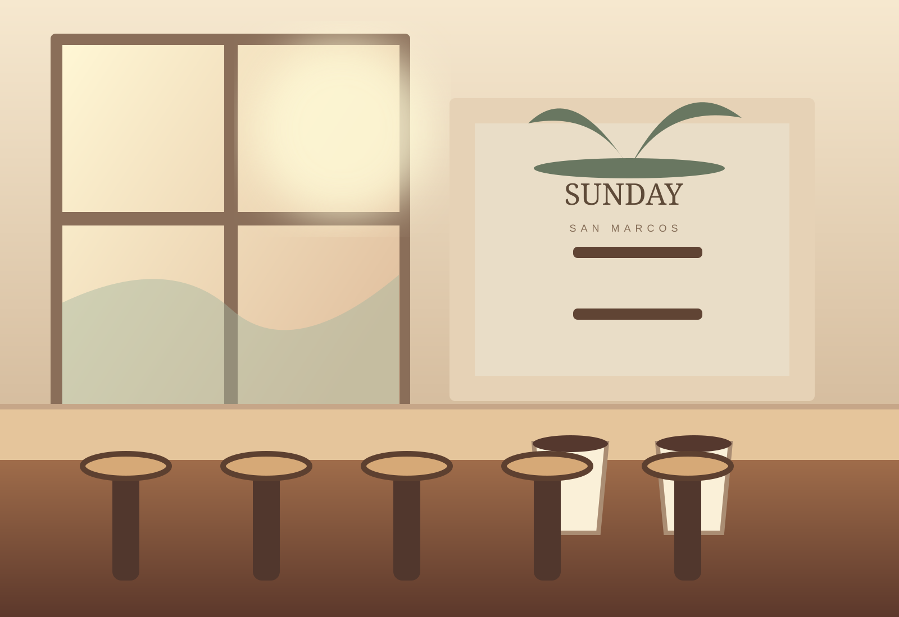
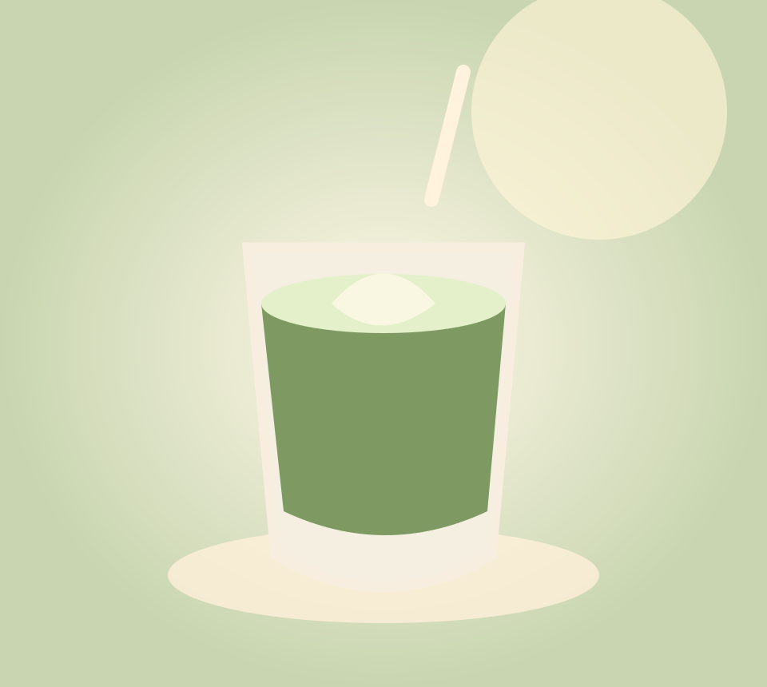
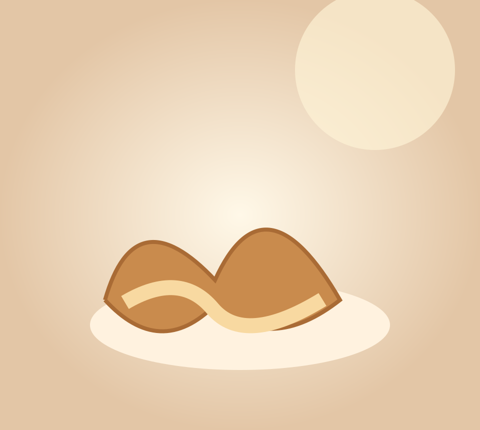

Five stools. Endless possibilities.
Pull up a seat at our five-stool coffee bar. Stay for a pastry, catch the morning sun, or take your favorite drink to go. An easygoing neighborhood coffee shop concept with a distinctly North County feel.
Golden light. Thoughtful coffee. A little corner of San Marcos made for the first good moment of your day.
See what's brewing ↗
sunshine served daily ☼Pull up a seat at our five-stool coffee bar. Stay for a pastry, catch the morning sun, or take your favorite drink to go. An easygoing neighborhood coffee shop concept with a distinctly North County feel.
A cozy favorite, warm or iced.

THE GREEN HOURBright, mellow, and made for mornings.
Small cup, big morning energy.

Fresh-baked comfort for the morning rush or a slower afternoon.
Follow the morning light.
A social-first concept, with Instagram-ready content and a neighborhood story worth sharing.
@sundaycoffee.sanmarcos ↗ Demo Instagram link